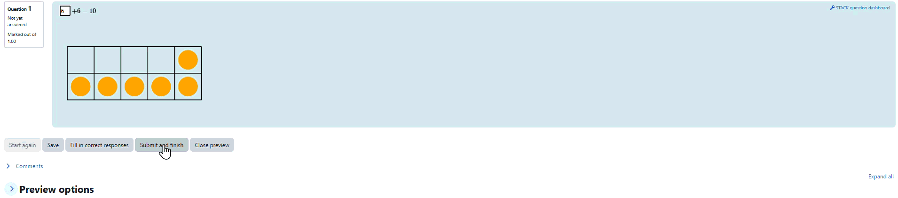
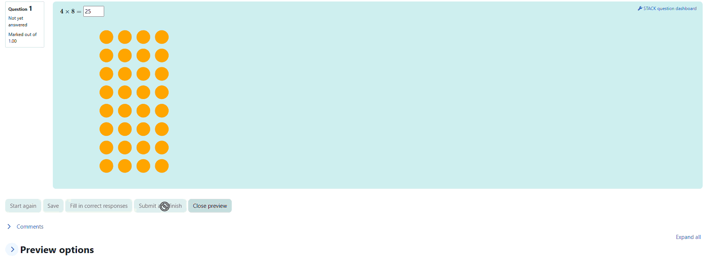
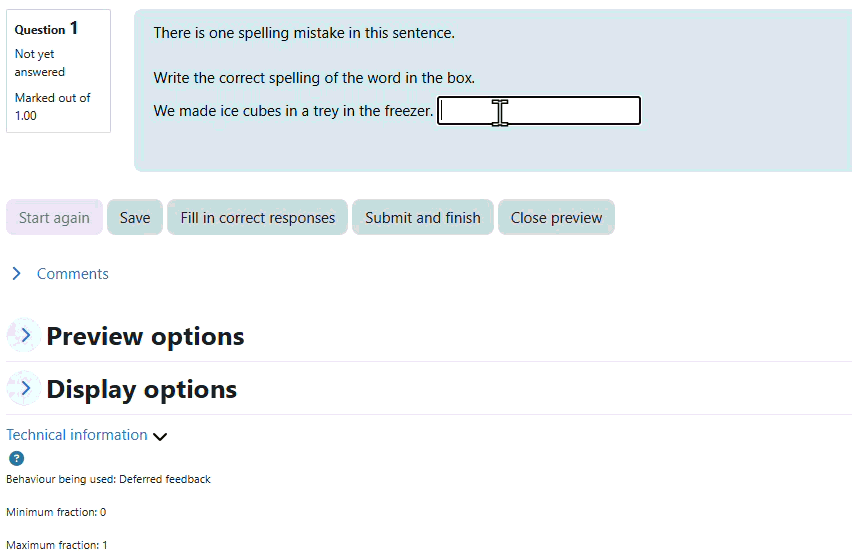

Instant feedback, smarter data, stronger learning.
Joel Scott
Background and Context
The Northern Territory School of Distance Education (NTSDE) is based in Darwin, Australia and serves students across an area of approximately 1.42 million . With a student population representing some of the most isolated areas in Australia. The school serves students in years 9-12 (ages 13 - 17). The school provides students with access to courses from South Australian Certificate of Education (SACE) syllabuses as well as internally written literacy and numeracy courses.
With the levels of literacy and numeracy in mind, the school has been working on a range of targeted resources in the Literacy and Numeracy Space. The ‘HEAL’ program aims to support students in reaching an EAL/D level of 4 and an appropriate level of numeracy skill to access the ‘Mathematics Essentials’ stage one (penultimate year) SACE course.
Numeracy
Within the HEAL numeracy course a ‘Daily Do Now’ program has been established aimed at providing opportunities for regular practice with basic numeracy skills. Initially this was built as a single level quiz using standard Moodle question types however this was quickly established as unable to provide the level of randomisation and feedback needed. STACK has been used to develop a range of resources to support these skills.
Basic Arithmetic:
At the lowest levels, STACK questions with jsxgraph components have been set up to provide visuals for student with very low numeracy skills. For example, the use of 10 frames in supporting addition and subtraction:

Additional questions have been built for multiplication and division with animation by jsxgraph as part of the feedback to support students and their ‘home school’ teachers in building capacity.

Translating Paper Based Algorithms
As students progress through basic numeracy, opportunities to demonstrate some foundational paper-based skills can be challenging in distance education. As such, STACK questions to model common vertical arithmetic algorithms were also built.

While technical limitations prevented the full implementation of borrowing for vertical subtraction, the feedback was able to demonstrate a step-by-step ‘paper style’ solution for the difference.

Literacy
Within the literacy program, there was a desire to capture some of the ideas of ‘Mastery-Based’ learning as well as spaced practice concepts for some basic literacy skills. The ability to include randomisation of questions as well as providing individualised feedback made STACK a natural choice for implementing these questions. The inclusion of jsxgraph objects to emphasise correct responses was also utilised in this project.
NAPLAN Style
In Australia, the National Assessment Program – Literacy and Numeracy (NAPLAN) is administered in years 3, 5, 7.
It is a nationwide measure through which parents/carers, teachers, schools, education authorities, governments and the broader community can determine whether or not young Australians are developing the literacy and numeracy skills that provide the critical foundation for other learning and for their productive and rewarding participation in the community.
An initial design for the Literacy ‘Daily Do Now’ focused on taking NAPLAN questions and converting their style into a STACK question. The majority of the questions generated were of a multiple choice format (either radio or drop down) where the feedback provided was tailored to the student response internally. Questions were broadly categorised as targeting spelling, grammar or punctuation and levelled to match the achievement levels within the NAPLAN assessment regime, namely ‘Needs Additional Support’, ‘Developing’, ‘Strong’ and ‘Exceeding’. Large Language Models (LLMs) were used to generate the data for each variant within a given question, allowing for a much richer experience and a greater degree of repeatability within these tasks than would traditionally be available for literacy-based activities.
Spelling
Questions for practicing spelling took either multiple choice or string. For the string responses, since this was a spelling task, a perfect string match (ignoring case, leading and trailing spaces) was considered correct. For incorrect responses, a jsxgraph object animating and highlighting the correct spelling was provided as feedback.

Grammar
For questions in the grammar portion of the tasks, multiple choice questions where both the prompt and the teacher answers were selected and generated in code from a bank of possible selections were used. In theory these banks can be expanded to add additional variants relatively quickly and easily, especially with the aid of an LLM. These questions had feedback targeted to the prompt provided and the student response.


Punctuation
Similarly to the grammar topic questions, punctuation questions were set up as multiple choice, with specific feedback based on the prompt and the student response.

Quiz Structure
These Daily Do Now tasks were initially imagined in a similar fashion to the Numeracy equivalents where students would attempt the ‘same task’ every day until they had completed a sufficient number of attempts and achieved a passing grade (100%). The randomisation and feedback were intended to support this goal.
Version 2
After some more discussion with subject matter experts a revised focus was agreed upon where rather than the task being one of repeated spaced practice of general skills, there would be a greater focus on the content of the current week. For example, the week one focus is on recounts, so questions based on appropriate use of past tense, word endings, sentence structure and reading the context of a piece of text. In this revised version of the quiz, new question styles were developed including the use of Parson’s problems and more complex string inputs.
Parson’s Storytelling
The STACK parsons block was used to develop tasks for students to demonstrate ability to read, comprehend and order the sentences within a text (for example a recount). This is very similar to the standard use but was novel in terms of the randomisation of the text which is being broken up for the Parson’s problem.

How long is a piece of string?
Although string matching is challenging for general concepts, for specific, unambiguous, punctuation tasks, it can be useful. Essentially, string checking using the length of the list of substrings (separated by space characters), then checking corresponding substrings between the teacher and student answers, we were able to provide opportunities to practice specific aspects of English punctuation. The feedback provided highlighted the standard rule being assessed in the question as well as any spelling/typographical errors in the student response.


Science
Within the science faculty we began a project looking at preparing a ‘Mastery Style’ set of practice questions for supporting students moving from year 10 science (a general course) into the stage one science courses (Biology, Chemistry and Physics). However, this proved to broad of a task initially so a tighter focus on just Biology was agreed to. STACK questions modelled on past papers from the SACE Biology final external exam were prepared with using various input types and randomisation. The goal was to give students access to the sorts of interpretive questions they would face in external examinations and the application of key definitions in science.
By randomising scenarios and the results to match specified patterns, we were able to generate repeatable questions to give students practice in identifying key markers for errors, the distinctions between precision, accuracy and validity as well as experimental design process and procedures. The use of LLM’s to generate additional scenarios was very helpful, allowing us to randomise datasets as well as the experiment discussed in each question.


There is still a great deal of scope to develop these tasks further and build a greater range of tasks in each of these spaces. It is too early to comment on student data however given what we know from literature (references) it seems likely that if students are able to access these tools and are supported by teachers to make use of the feedback provided as well as the opportunities to revisit tasks, the long term impact should be significant and positive.